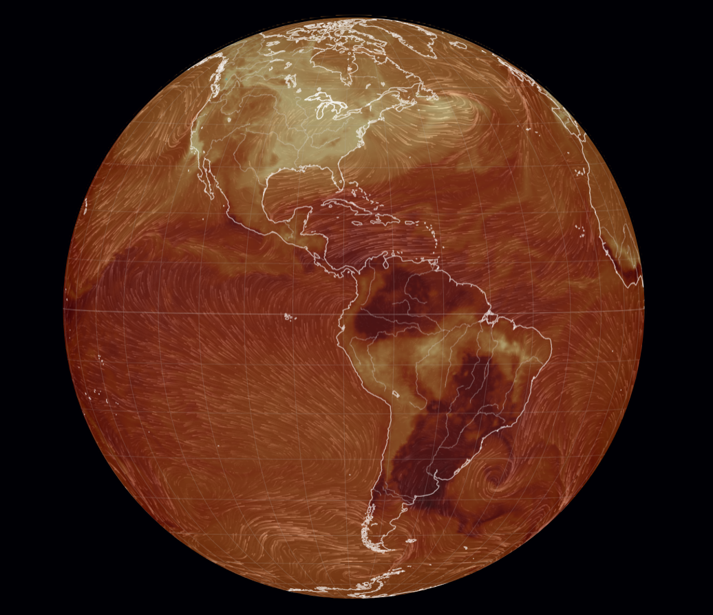
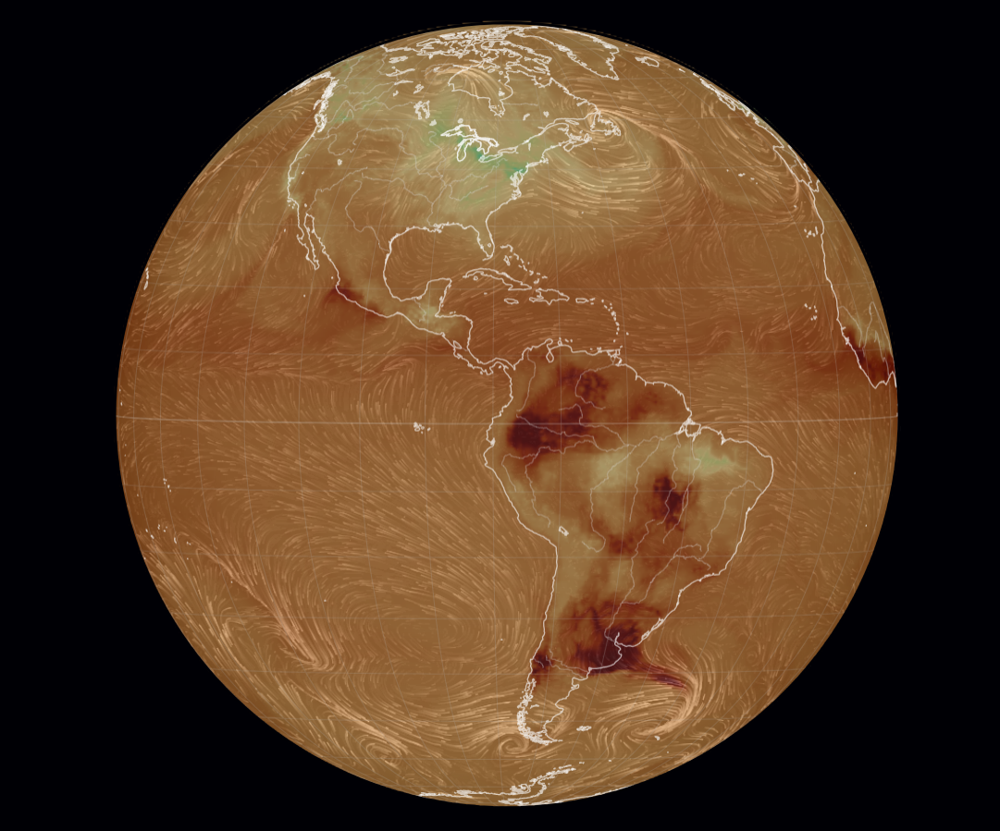
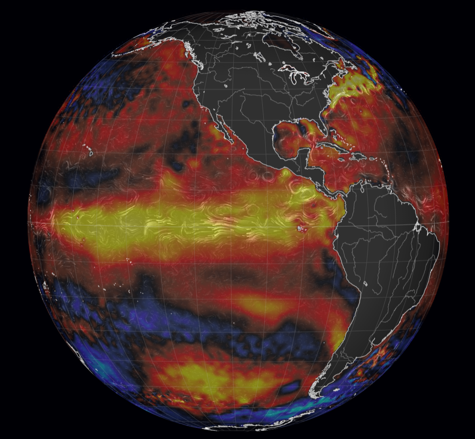
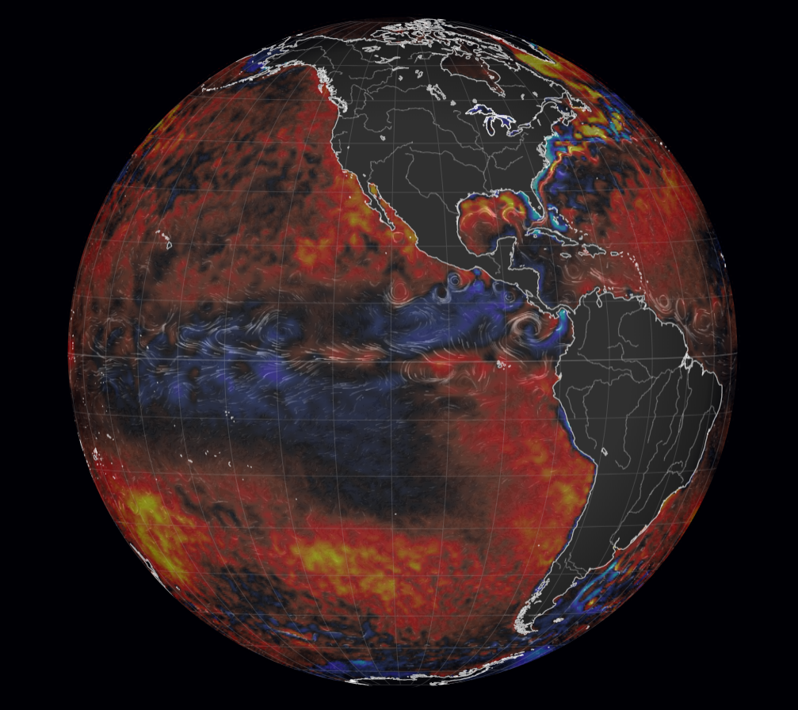

Conexão Clima: Ação Humana, História e Tecnologia
Origem e História do El Niño
O termo "El Niño" ("O Menino", em referência ao Menino Jesus) foi criado por pescadores na costa do Peru e Equador no século XIX. Eles perceberam que, perto de dezembro, as águas do oceano aqueciam, afastando os cardumes de peixes.
Na década de 1920, o meteorologista Gilbert Walker identificou alterações de pressão entre o Oceano Índico e o Pacífico (Oscilação Sul). Anos depois, o cientista Jacob Bjerknes uniu os conceitos, provando que o aquecimento do oceano e as mudanças na atmosfera fazem parte de um mesmo sistema: o ENOS.
Ação Humana e Mudanças Climáticas
O El Niño é causado pelo ser humano? Não. O El Niño é um fenômeno natural. No entanto, a ação humana está tornando o fenômeno mais intenso e devastador.
A queima de combustíveis fósseis e o desmatamento aumentaram drasticamente a concentração de CO₂ na atmosfera:
- Aquecimento dos Oceanos: Cerca de 90% do excesso de calor retido pelo efeito estufa é absorvido pelos mares.
- Super El Niños: Oceanos mais quentes injetam mais energia na atmosfera. Estudos do IPCC e do INPE indicam que a crise climática torna os eventos de "Super El Niño" mais frequentes e severos, gerando secas extremas e tempestades recordes.
Conexão Clima: Aumento de CO₂ e Anomalia Oceânica
O El Niño é um fenômeno natural, porém o acúmulo contínuo de gases de efeito estufa atua como um retentor térmico na atmosfera. Como o oceano absorve a maior parte desse excesso de energia, as variações de temperatura atingem patamares extremos.
Abaixo, acompanhe a relação direta de causa e efeito em uma comparação entre o ciclo de 2015-2016 e o ciclo recente de 2025-2026.
Painel Comparativo: Causa e Efeito (ENOS)
Análise da evolução da concentração de gases de efeito estufa e a resposta de aquecimento no Pacífico Equatorial.

⚠️ Nesta camada: quanto mais claro/brilhante o tom, maior é a concentração do gás.

⚠️ Observe a expansão das áreas claras (maior acúmulo de carbono retido).

⚠️ Nesta camada: tons vermelhos e amarelos indicam águas bem acima da média.

⚠️ Tons roxos/pretos indicam superaquecimento crítico (desvios de até +4°C).
* Os tons avermelhados, roxos e pretos nas imagens de anomalia (SSTA) representam desvios críticos acima da média histórica (+3°C a +4°C). Fonte: Earth Nullschool (Chem/CO₂ e Ocean/SSTA).
A partir das imagens, é possível concluir que o aumento contínuo no acúmulo de CO₂ atmosférico (indicado pela expansão das áreas mais claras) intensifica o efeito estufa, impulsionando o superaquecimento do Pacífico Equatorial e tornando as anomalias térmicas do El Niño significativamente mais extremas.
3. Tecnologias no Monitoramento Meteorológico
Para prever os impactos e proteger populações, são utilizadas tecnologias de ponta:
- Rede de Bóias TAO/TRITON: Dezenas de bóias ancoradas no Oceano Pacífico medem em tempo real a temperatura da água até 500 metros de profundidade e a força dos ventos.
- Satélites de Radar e Imagem (NASA, ESA e GOES): Monitoram a elevação da superfície do mar e a formação de tempestades em tempo real.
- Supercomputadores (INPE/INMET): Modelos numéricos processam dados globais para prever secas e chuvas intensas com meses de antecedência, orientando ações das Defesas Civis (NUPDECs).
Fontes e Referências
- IPCC (Relatório Climático Global): Sixth Assessment Report (AR6) — Mudanças Climáticas e Impactos no ENOS
- NOAA (Monitoramento Oceânico): Projeto TAO/TRITON e Dados do Pacífico Equatorial
- INPE / CPTEC: Boletins Técnicos e Monitoramento do Fenômeno El Niño no Brasil
- INMET: Histórico de Impactos e Previsões Meteorológicas